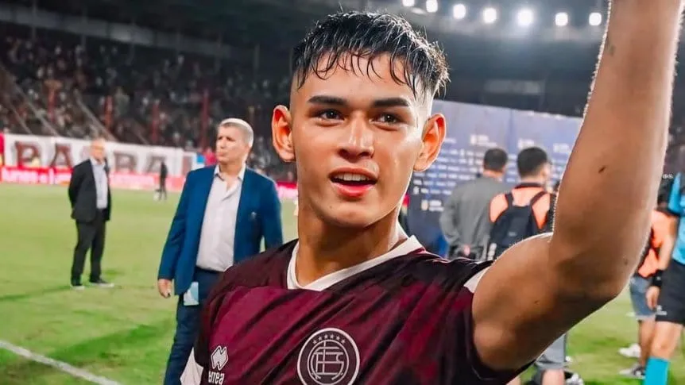
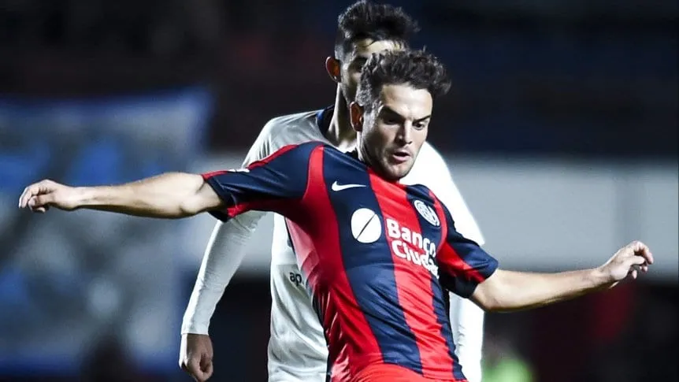
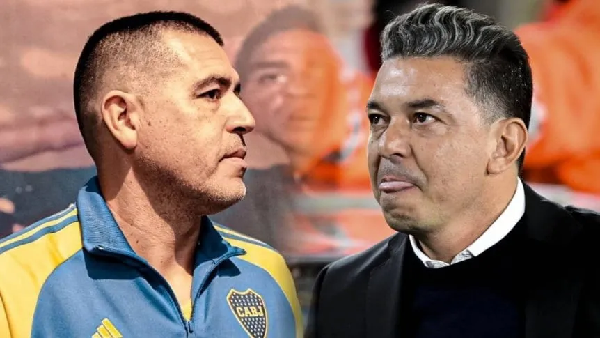
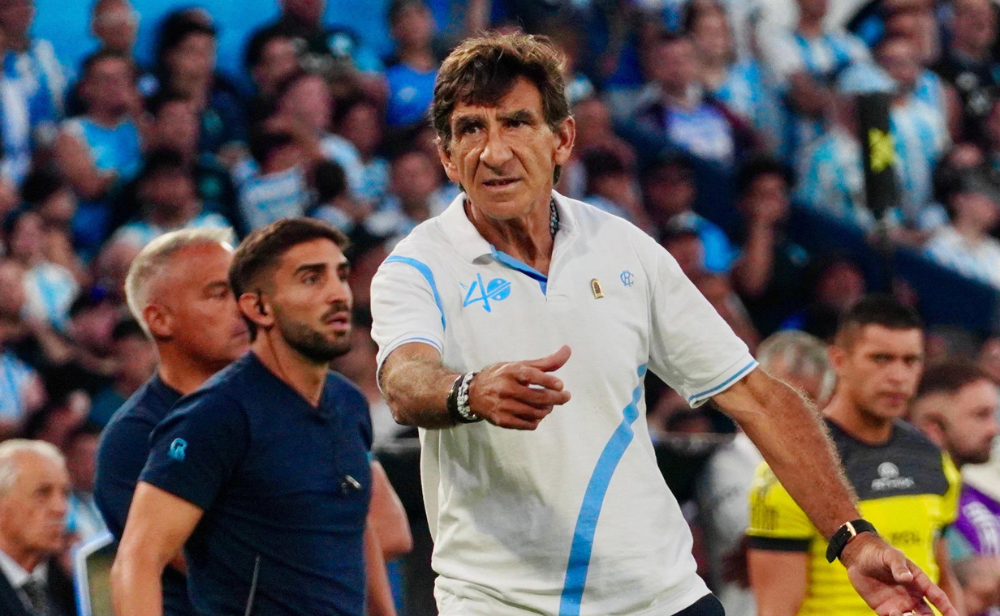
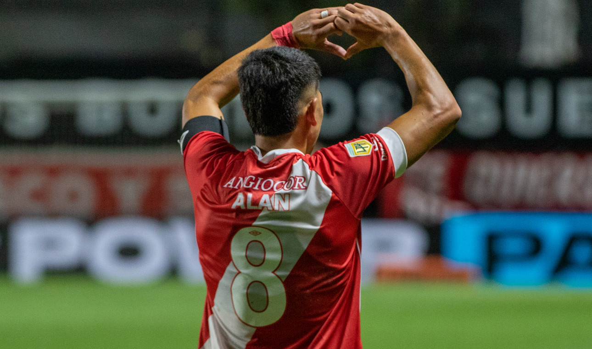
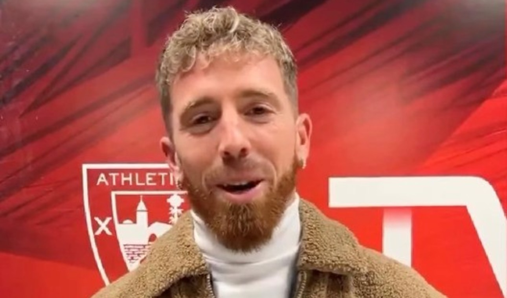
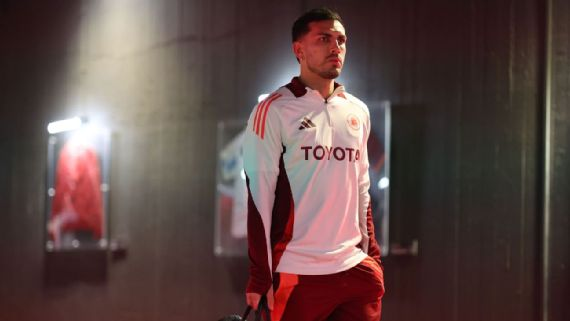

Julio Soler a punto de ser vendido a la Premier League
Julio Soler, la joya del granate que se va para Inglaterra.
Con apenas 19 años y 31 partidos jugados en Lanús, Julio Soler continuará su carrera en el Bournemouth de la Premier League de Inglaterra. Su irrupción en la primera división del granate se dio en las primeras fechas de la Copa de la Liga Profesional del año pasado, si bien no arrancó como titular, en la fecha 4 Ricardo Zielinski le dio la chance y a partir de ese momento fue una pieza clave para el equipo, con sus desbordes, su energía y su desparpajo demostró que tenía mucho para dar.
Tigre pidió la inhibición por una deuda por Menossi
Lucas Menossi vistió la camiseta de San Lorenzo entre 2019 y 2021. (Marcelo Endelli/Getty Images)
San Lorenzo, en medio de una crisis institucional y deportiva, suma un nuevo problema. Tigre pidió la inhibición del club de Boedo a raíz de una deuda por la transferencia de Lucas Menossi.María Clara Scachi, abogada de la institución de Victoria, presentó una demanda ante la Cámara Nacional de Resolución de Disputas por el conflicto en el pase del futbolista, quien se transformó en futbolista del Ciclón en junio de 2019 y actualmente está en Belgrano de Córdoba. Según informó Doble Amarilla, Tigre reclama una deuda de U$S 338.613,81 entre capital e intereses. Además, el club del norte del Gran Buenos Aires solicita que le apliquen "sanciones" al Ciclón por “incumplimiento del Laudo Arbitral”.
FC Dallas rechazó la oferta de Boca por Alan Velasco.

Alan Velasco, del FC Dallas de la MLS, es el jugador pretendido por Boca Juniors (Mandatory Credit: Tim Heitman-USA TODAY Sports)
Boca Juniors continúa con las negociaciones para incorporar al extremo argentino Alan Velasco, actualmente jugador del FC Dallas de la Major League Soccer (MLS). Aunque ya existe un acuerdo entre el club argentino y el futbolista en relación a las condiciones de su contrato, las conversaciones con la institución estadounidense aún no han llegado a buen puerto debido a diferencias económicas.Según pudo saber Infobae, el FC Dallas exige una cifra superior a los 11 millones de dólares por el 85% del pase del jugador, una suma que en Boca no esperaban y que supera la oferta inicial realizada por el equipo argentino. En detalle, el club de la MLS habría solicitado 11,8 millones de dólares por el 85% de la ficha de Velasco, lo que obligará al Xeneize a replantear su propuesta.
Cómo hizo River para 'robarle' a Boca a Galoppo y Rojas
Gallardo se anticipó a Riquelme y logró fichar a Matías Rojas y Giuliano Galoppo a River.
Fue una maniobra en tiempo récord y abrió el Superclásico del mercado de pases. En menos de 48 horas, River selló las llegadas de Matías Rojas, procedente en condición de libre tras dejar Inter Miami, y Giuliano Galoppo, a préstamo desde San Pablo, y los convirtió en las caras nuevas del plantel de cara a la pretemporada en San Martín de los Andes. Lo más curioso es que ambos volantes estuvieron en el radar de Boca, pero el Millonario lo durmió, pisó el acelerador y se los sacó del buche rápidamente. ¿Cómo hizo para seducirlos? Leer Mas...
Costas y los tremendos elogios a su Racing
Gustavo Costas, siempre activo y dando indicaciones.
Corre para un lado, corre para el otro. Grita, da indicaciones sin parar, se le escapa alguna puteada al aire y festeja como el hincha N° 1 que es. Pasa el tiempo y Gustavo Costas no cambia. A pesar de haber conseguido la Copa Sudamericana y sacarse de encima la pesada mochila de lograr un título con el club de sus amores, el entrenador de Racing quiere ir por más y no se conforma. Y fiel al estilo que imprimió, el equipo continúa respondiéndole dentro y fuera de la cancha: tiene puntaje ideal, goleó 4-0 a Belgrano y sueña con repetir lo de la temporada pasada.
Argentinos le ganó a Tigre y Diez consiguió su primer triunfo como entrenador
Festejo de Alan Rodriguez Argentinos - Tigre. Foto: Jorge Junes / Prensa Arg. Jrs
El encuentro entre Argentinos Juniors y Tigre marcaba el encuentro entre dos equipos que habían mostrado estar a la altura en la primera fecha del Apertura. El Matador venía de dar el batacazo goleando 3-0 a Vélez, campeón del fútbol argentino, mientras que el Bicho había hecho un gran papel en el empate 0-0 frente a Boca el pasado domingo. Es por ello que la velada del jueves por la noche era prometedora y aún más teniendo en cuenta el duelo de estilos entre dos entrenadores con ideas completamente diferentes. Nico Diez en el banco local y Diego Dabove al frente del Matador.
Muniain fue a ver a su Athletic Bilbao
El español, presente en el duelo del Atheltic con Viktoria Plzen por la octava fecha de la Europa League.
San Lorenzo recibió un durísimo golpe al confirmarse la lesión de Iker Muniain el viernes pasado. Ante la situación, el futbolista decidió viajar a España durante una semana para tratar el desgarro con un especialista de su país. Ahora, a poco de su regreso, el Vasco no pudo resistirse a visitar San Mamés para ver el partido entre Athletic Bilbao y Viktoria Plzen por la Europa League.
Fechas claves para el posible regreso de Paredes a Boca
Paredes y Boca definen la novela del mercado de pases de verano en Argentina.
Boca espera una prórroga por la salida de Mauricio Benítez a Royal Antwerp, de Bélgica. En tanto, el caso de Esteban Rolón, que iría a préstamo a Sport Recife, de Brasil, no se toma en cuenta porque no firmó planilla durante el año pasado. Paredes, de 30 años, campeón con la Selección Argentina del Mundial de Qatar 2022 y actual bicampeón de América (2021 y 2024), viene siendo titular en Roma, ahora dirigida por el italiano Claudio Ranieri, quien había asegurado que no iban a impedir su salida, si esa era su intención. Leer mas...
Estos son 16vos de UEFA Champions League: fixture, fecha, hora y TV en vivo
>La UEFA confirmó las fechas y horarios de los partidos de playoffs de su máxima competencia de equipos.
Los ganadores de las series de playoffs entre Real Madrid y Manchester City; Juventus y PSV Eindhoven, Brest y PSG; Sporting Lisboa y Borussia Dortmund; Club Brujas y Atalanta; Mónaco y Benfica; Celtic y Bayern Múnich y Feyenoord vs. Milan, accederán a los octavos de final del certamen europeo. Sus siguientes rivales los conocerán por sorteo, pero habrá un par de equipos posibles para cara vencedor de 16avos.